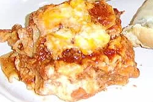

Lasagna

This is a faster and less expensive lasagna
This lasagna will take around 30 minutes to prepare, 30 minutes to cook so the total time is 1 hour.
This recipe can serve a total of 8 people.
Ingredients
- 1(16 ounce) package lasagna noodles
- 1 pound lean ground beef
- salt and pepper to taste
- 1(16 ounce) jar spaghetti sauce
- 1 clove garlic, minced
- half a pound shredded mozzarella cheese
- half a pound shredded Cheddar cheese
- ! pint ricotta cheese
Steps
- Bring a large pot of lightly salted water to a boil. Add pasta and coook for 8 to 10 minutes or until al dente;drain
- Preheat oven to 350 degrees F (175 degrees C). In a large skillet over medium-high heat, brown beef and season with salt and pepper; drain. Stir in spaghetti sauce and garlic and simmer 5 minutes.
- In a medium bowl, combine mozzarella, Cheddar and ricotta; stir well. In 9x13 inch pan, alternate layers of noodles, meat mixture and cheese micture until pan is filled.
- Bake in preheated oven for 30 minutes, or until cheese is melted and bubbly.